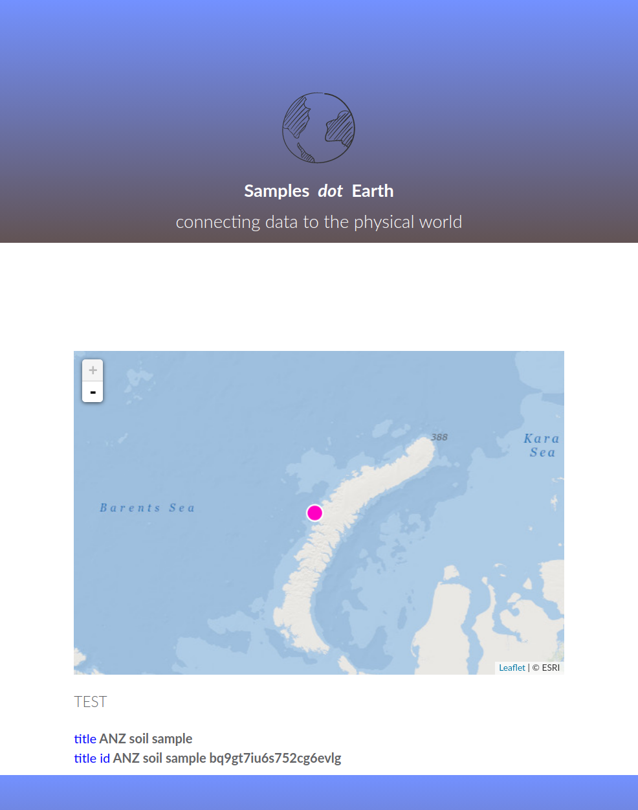

This is an un-vetted overview of some of the actions a provider may need to do to be part of the IGSN2040 sprint. Some of these items will be required, others will not be.
The sprint will be a test of the flow of information through a new proposed architecture. It will provide an opportunity for providers and indexers to find issues and points that need clarification. For reference providers can reference the ESIP Science on Schema recommendations for schema.org type Dataset as an idea of the type of guidance that could be developed for the samples community.
OPTIONAL: Providers may decide to generate or modify their robots.txt file to provide guidance to the aggregators to be used in this sprint. The plan is to use the Gleaner software (gleaner.io) as well as some Python based notebooks and a few other approaches in this test.
Goals here will be to provide guidance to indexers from the providers.
Gleaner used an agent string of EarthCube_DataBot/1.0 and this can be used a robots.txt file to specify alternative sitemaps and guidance. This also allows you to provide guidance to Google and other potential indexers both for allow and disallow directives.
Sitemap: http://samples.earth/sitemap.xml
User-agent: *
Crawl-delay: 4
Allow: /
User-agent: Googlebot
Disallow: /id
User-agent: EarthCube_DataBot/1.0
Allow: /
Sitemap: http://samples.earth/test.xml
Providers in the sprint will be required to expose a set of sample landing pages using a sitemap.xml file. As noted above, providers can expose a test sitemap file to just the target agent in this sprint to avoid indexing test pages by commercial providers.
Information on the sitemap structure can be found at sitemaps.org.
A goal of this section will be to discuss the use of sitemap lastmod to provide guidance to indexers on sample updates. Additionally indexers may test ways to evaluate additions and removals from the sitemap URL set to manage create, update, delete and edit branches.
<?xml version="1.0" encoding="UTF-8"?>
<sitemapindex xmlns="http://www.sitemaps.org/schemas/sitemap/0.9">
<sitemap>
<loc>http://samples.earth/sitemap_websites_samplesearth.xml</loc>
<lastmod>2004-10-01T18:23:17+00:00</lastmod>
</sitemap>
<sitemap>
<loc>http://samples.earth/sitemap_doclouds_igsndatagraphs.xml</loc>
<lastmod>2005-01-01</lastmod>
</sitemap>
</sitemapindex>
The final tan in the tangram is the landing page. Samples will need a landing page with a JSON-LD data graph placed in it via a
<script type="application/ld+json"></script>
entry in the document head.
An example data graph can be seen below but we will be updating this with a better example and also provide some more technical details for publishers for things like schema and validation approaches.
Providers may also wish to provide content negotiation for type application/ld+json for these resources. Some indexers like Gleaner will attempt to negotiate for the specific serialization and this will likely lighten the load on the servers going forward.

{
{
"@context": {
"@vocab": "http://schema.org/",
"datacite": "http://purl.org/spar/datacite/",
"earthcollab": "https://library.ucar.edu/earthcollab/schema#",
"geolink": "http://schema.geolink.org/1.0/base/main#",
"vivo": "http://vivoweb.org/ontology/core#",
"dbpedia": "http://dbpedia.org/resource/",
"geo-upper": "http://www.geoscienceontology.org/geo-upper#"
},
"@id": "http://sample.igsn.org/soilarchive/bq9gt7iu6s752cg6evig",
"@type": [
"http://www.w3.org/2002/07/owl#Thing",
"http://www.w3.org/ns/sosa/Sample"
],
"spatialCoverage": {
"@type": "Place",
"geo": {
"@type": "GeoCoordinates",
"latitude": -44,
"longitude": 25
}
},
"http://purl.org/dc/terms/title": "ANZ soil sample bq9gt7iu6s752cg6evig",
"description": "It is a truth universally acknowledged, that a single man in possession of a good fortune, must be in want of a wife.",
"additionalType": [{
"@id": "http://pid.geoscience.gov.au/def/voc/igsn-codelists/PhysicalSample"
},
{
"@id": "http://pid.geoscience.gov.au/def/voc/igsn-codelists/soil"
}
],
"creator": {
"@id": "http://sample.igsn.org/soilarchive/CDS-NSW"
},
"dateCreated": {
"@type": "http://www.w3.org/2001/XMLSchema#date",
"@value": "1990-02-11T00:14:55-06:00"
},
"title": "ANZ soil sample",
"url": {
"@id": "http://samples.earth/id/bq9gt7iu6s752cg6evig"
},
"http://www.w3.org/2000/01/rdf-schema#label": "ANZ soil sample",
"http://www.w3.org/ns/dcat#landingPage": {
"@id": "http://samples.earth/doc/bq9gt7iu6s752cg6evig"
},
"http://www.w3.org/ns/sosa/isResultOf": {
"@id": "_:b0"
},
"http://www.w3.org/ns/sosa/isSampleOf": [{
"@id": "http://www.anzsoil.org/data/csiro-natsoil/anzsoilml201/soil/soil_199.CAN.C410"
},
{
"@id": "http://www.anzsoil.org/data/csiro-natsoil/anzsoilml201/soilhorizon/soil_horizon_199.CAN.C410.1.2"
}
]
}
{"type":"GeometryCollection","geometries":[{"type":"Point","coordinates":[25,-44]}]}}